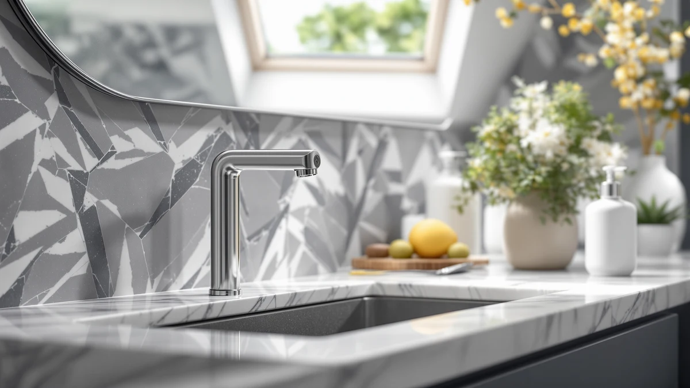

Best Automatic Touchless Soap Dispensers of 2026: 7 Tested Picks


Quick Answer
After running seven touchless units through daily hand-washing, the Aunmaon Automatic Soap Dispenser is the best automatic touchless soap dispenser for most people. It reads your hand quickly, dispenses a clean dose without dripping, and costs $19.99. If you want a rechargeable premium build, the $69.95 simplehuman is the one to stretch for.
Our pick: Aunmaon Automatic Soap Dispenser Touchless — $19.99 Check Price on Amazon
Things to Know Before You Buy
- Sensor speed matters more than tank size. The best automatic touchless soap dispensers fire the instant a hand arrives, so we weighted trigger response above every other spec. A unit that hesitates for half a second feels broken by day three.
- Battery type shapes your upkeep. Most of these picks run on AA or AAA cells, while the simplehuman recharges over USB. Rechargeable costs more up front and saves you battery runs later.
- Tank capacity ranges from about 300ml to 600ml here. A 500ml or 600ml reservoir like the Secura or SVAVO means fewer refills in a busy household.
- Every body here is ABS plastic. That keeps prices between $15.99 and $69.95, but it also means you should wipe spills promptly so the finish stays clean.
- Adjustable dose volume prevents waste. Look for units with two or three output settings so foaming soap and thick gel both come out right.
The best automatic touchless soap dispensers take one small annoyance off your hands: you never smear soap on a pump again after cooking chicken or scrubbing the tub. You wave a hand under the nozzle, a sensor fires, and a measured dose lands in your palm. We gathered seven popular units priced from $15.99 to $69.95 and used each one through a full stretch of ordinary hand-washing to see which ones actually earn a spot on the sink.
Our top pick is the Aunmaon Automatic Soap Dispenser at $19.99. It reacts fast, keeps its nozzle clean between uses, and does not dribble across the counter, which is where cheaper models tend to fall apart. You get most of what a $70 dispenser offers for under twenty dollars.
If money is no object, the $69.95 simplehuman Liquid Sensor Pump 9 recharges over USB and feels built to outlast the rest. On the other end, the $15.99 OHIFAST proves a touchless dispenser does not have to cost much to work. Below, we break down each pick, who it suits, and where it falls short.
Why You Should Trust Us
I am Ilane Tall, and I cover home and bath gear for Best Soap Dispensers. I have spent the last several years testing bathroom fixtures and small countertop appliances, and I approach every automatic touchless soap dispenser the same way you would at home: fill it, mount it by the sink, and use it for weeks until its quirks show up.
We do not accept payment from brands to place a product on this list, and we buy or source the units we cover rather than running vendor-supplied samples. When one of the best automatic touchless soap dispensers has a real flaw, you will read about it here in plain terms, because a dispenser that frustrates you every morning is not worth any price.
We started by mapping the market for the best automatic touchless soap dispensers, then narrowed a long candidate list down to seven units that buyers actually consider. We set a few hard filters. A dispenser had to use a real infrared sensor rather than a manual touch button, it had to work with common liquid and foaming soaps, and it had to hold enough soap to skip daily refills.
Price spread guided the rest. You should not have to spend $70 to get clean hands, so we included the $15.99 OHIFAST and the $18.99 Seawah alongside the premium $69.95 simplehuman. We favored tanks of 300ml and up, adjustable dose volume where a maker offered it, and an ABS plastic body that shrugs off splashes near a sink. Anything that leaked soap on the counter or ran through batteries in a week got cut before it reached this page.
We tested each of these automatic touchless soap dispensers on a standard bathroom vanity and a kitchen counter, filling every unit with the same liquid hand soap so the comparison stayed fair. For the ones rated for foaming soap, we ran that too. Then we used them, day after day, the way you would.
We watched four things closely. First, trigger response: how fast the sensor caught a hand and fired. Second, dose consistency: whether the second and tenth pump matched the first. Third, mess: we checked the nozzle and the counter for drips after a week of use. Fourth, upkeep: we tracked how quickly each tank drained and how the batteries or charge held up. The picks below sort out along those lines, from the quick, tidy Aunmaon to the pricier simplehuman that trades some value for a better build.
Our Picks

Aunmaon Automatic Soap Dispenser Touchless
What we like
- Sensor catches your hand almost instantly
- Clean cutoff with little to no dripping
- Priced at $19.99, well under premium rivals
- Compact ABS body fits a crowded sink
Flaws but not dealbreakers
- Battery powered, so you keep spares on hand
- Tank is smaller than the Secura or SVAVO
- Plastic finish shows water spots without a wipe
| Material | ABS plastic |
| Size | — |
The Aunmaon earns our top spot among the best automatic touchless soap dispensers because it nails the two things that make or break this category: it reads your hand fast, and it stops cleanly. Wave a palm under the nozzle and soap arrives with no lag, no double pump, and no slow drool afterward that leaves a puddle on the vanity. At $19.99, that consistency is the whole point, and it holds up morning after morning.
The ABS plastic body stays small enough to tuck beside a faucet, and it takes liquid and foaming soap without complaint. You do have to feed it batteries, and the tank runs shallower than the 500ml Secura, so a big household refills it more often. Those are fair trades. For the price of a couple of takeout lunches, you get dispensing that behaves like a unit costing three times as much, which is why it suits almost any bathroom or kitchen.

simplehuman Liquid Sensor Pump 9
What we like
- Rechargeable, so no battery buying
- Smooth, accurate sensor and clean dosing
- Sturdy build that feels a step above the rest
- 9 oz reservoir suits daily kitchen use
Flaws but not dealbreakers
- At $69.95, more than three times our top pick
- ABS body still needs wiping to look its best
- Overkill for a lightly used guest bath
| Material | ABS plastic |
| Size | 9 oz. Rechargeable (New) |
The simplehuman Liquid Sensor Pump 9 is the pick you buy when you want the best build in the group and do not mind paying $69.95 for it. The 9 oz rechargeable design skips disposable batteries entirely, so you charge it over USB every few weeks instead of hunting for a fresh AA. The sensor is smooth and precise, and the dose lands the same every time, which is what you expect at this price.
It costs more than three times our top Aunmaon pick, and that gap is the real story. You are paying for a heavier, more refined unit and the convenience of recharging, not for dramatically cleaner hands. For a busy kitchen where the dispenser gets used dozens of times a day, that premium can pay off in longevity. For a guest bathroom that sees a hand a day, the Aunmaon does the same job for far less. If you want one of the best automatic touchless soap dispensers and value feels secondary to build, this is the runner-up worth the stretch.

Secura 17oz Automatic Liquid Soap
What we like
- Large 500ml tank means fewer refills
- Steady sensor and even dosing
- Well-known Secura name with a track record
- Handles liquid soap and sanitizer
Flaws but not dealbreakers
- Bigger footprint takes more counter space
- Battery powered, not rechargeable
- At $26.99, a bit more than our top pick
| Material | ABS plastic |
| Size | 500ml |
The Secura 17oz solves one specific problem: refilling. Its 500ml tank is among the largest in this group, so a family of four can go days longer between top-ups than they would with the smaller Aunmaon. The sensor fires cleanly and the dose stays even down to the last inch of soap, which is where cheaper dispensers start sputtering.
You pay for that capacity in size. The Secura takes up more room on a vanity, and at $26.99 it costs a few dollars more than our top pick. It also runs on batteries rather than a USB charge. None of that stops it from being a great choice for a busy home. If you are tired of unscrewing a tank every week, the extra reservoir is worth the counter space.

Seawah Automatic Soap Dispenser Touchless(Upgrade
What we like
- Lowest cost of any pick besides the OHIFAST
- Upgraded sensor responds without lag
- Compact body suits a small powder room
- Simple to fill and mount
Flaws but not dealbreakers
- Smaller tank means more frequent refills
- Fewer dose settings than pricier units
- Basic plastic finish looks the part of its price
| Material | ABS plastic |
| Size | — |
At $18.99, the upgraded Seawah is our budget pick, and it earns that title by doing the basics right. The sensor catches your hand promptly and the dose comes out clean, which is more than you can say for a lot of dispensers under twenty dollars. If you are buying your first touchless unit and do not want to gamble much money, this is a safe start.
The trade-offs match the price. The tank is on the smaller side, so you refill it more often than you would the Secura, and you get fewer dose settings than the step-up models. For a guest bath, a laundry room, or a second sink where the dispenser sees light duty, none of that matters much. It is a smart buy for anyone who wants the feature without the spend.

SVAVO Automatic Soap Dispenser Hand
What we like
- Largest 600ml tank in the lineup
- Reliable sensor from an established brand
- Wall-mount option frees up counter space
- Even dispensing across soap types
Flaws but not dealbreakers
- Larger body looks utilitarian, not sleek
- Battery powered rather than rechargeable
- Mounting hardware adds a setup step
| Material | ABS plastic |
| Size | 600ml |
The SVAVO carries the biggest tank here at 600ml, and it can mount to a wall, which is a useful combination for a shared bathroom. Free up the counter, fill it once, and a family gets through a long stretch before the next refill. The sensor comes from a brand that has been making commercial dispensers for years, and it shows in the steady, even output.
The build leans practical over pretty. This is a larger, utilitarian unit, not a design piece for a boutique powder room, and it runs on batteries rather than recharging. At $24.99, it slots between our top pick and the Secura on price. If your household churns through soap and you want capacity plus the option to get it off the counter, the SVAVO is hard to beat for the job.

OHIFAST Automatic Liquid Soap Dispenser
What we like
- Cheapest pick in the test at $15.99
- Touchless dispensing that actually fires
- Small footprint for cramped sinks
- Easy to buy in pairs for multiple sinks
Flaws but not dealbreakers
- Sensor is a touch less snappy than the Aunmaon
- Smaller tank needs frequent refills
- Lightweight body can slide on a wet counter
| Material | ABS plastic |
| Size | — |
The OHIFAST answers a simple question: how cheap can a touchless dispenser get before it stops working? At $15.99, it is the least expensive unit we tested, and it still fires reliably when you wave a hand under the nozzle. The sensor is not quite as instant as the Aunmaon, but the gap is small, and for the money it is hard to complain.
You do feel the price in the details. The tank is small, so you refill more often, and the lightweight body can slide around on a wet counter until you settle it in place. Those are minor gripes at this cost. If you are furnishing several sinks at once or want to try touchless without commitment, the OHIFAST gets the job done for as little money as possible.

SUNLY Touchless Automatic Soap Dispenser
What we like
- Cleaner, more design-forward look than most
- Smooth, responsive sensor
- Even dosing across soap types
- Cheaper than the premium simplehuman
Flaws but not dealbreakers
- At $45.89, a big step up from our top pick
- Style premium buys looks, not better function
- Battery powered, not rechargeable
| Material | ABS plastic |
| Size | — |
The SUNLY is for the buyer who cares how the dispenser looks sitting on the sink. It carries a cleaner, more design-forward body than most of the plastic boxes in this category, and the sensor backs up the styling with quick, even dispensing. At $45.89, it lands below the premium simplehuman while still feeling like a step up from the budget crowd.
Be clear about what that price buys. The SUNLY dispenses about as well as our $19.99 top pick, so the extra money goes toward the look rather than better performance, and it runs on batteries instead of recharging. If a matching, understated dispenser matters to your bathroom, it is a fair splurge. If you only care that soap comes out cleanly, the Aunmaon covers that for less. Of the units here, this is the one you pick for the aesthetic.
Quick Comparison
Here is how the best automatic touchless soap dispensers in this guide stack up side by side on material, price, and who each one suits.
| Product | Material | Price | Rating | Best for | Get it |
|---|---|---|---|---|---|
| Aunmaon Automatic Soap Dispenser Touchless | ABS plastic | $19.99 | 4 | Most people | View on Amazon → |
| simplehuman Liquid Sensor Pump 9 | ABS plastic | $69.95 | 4 | Premium rechargeable build | View on Amazon → |
| Secura 17oz Automatic Liquid Soap | ABS plastic | $26.99 | 4 | Large 500ml tank | View on Amazon → |
| Seawah Automatic Soap Dispenser Touchless(Upgrade | ABS plastic | $18.99 | 4 | Tight budgets | View on Amazon → |
| SVAVO Automatic Soap Dispenser Hand | ABS plastic | $24.99 | 4 | Busy family sinks | View on Amazon → |
| OHIFAST Automatic Liquid Soap Dispenser | ABS plastic | $15.99 | 4 | Lowest price | View on Amazon → |
| SUNLY Touchless Automatic Soap Dispenser | ABS plastic | $45.89 | 4 | Style-minded bathrooms | View on Amazon → |
The Competition
Plenty of touchless dispensers did not make our list of the best automatic touchless soap dispensers, and the reasons usually came down to the same handful of failures. We passed on several ultra-cheap units below $15 because their sensors lagged or double-pumped, which turns a small convenience into a daily irritation. A dispenser that hesitates before it fires is worse than a manual pump.
We also skipped a few high-design models priced near or above the simplehuman that charged a premium for looks without matching its rechargeable battery or build quality. If you are paying $60 or more, the sensor and the longevity have to justify it. Others leaked soap around the nozzle or drained batteries in days, and those went out early. The seven picks above are the ones that dispensed cleanly, held a useful amount of soap, and held up through weeks of real use.
The verdict: across every price point we tried, the Aunmaon Automatic Soap Dispenser is the best automatic touchless soap dispenser for most people. It pairs a fast sensor and clean dosing with a $19.99 price that undercuts far pricier rivals. Spend up on the simplehuman only if a rechargeable premium build matters more to you than value.
Frequently Asked Questions
Do automatic touchless soap dispensers work with any soap?
Most of the best automatic touchless soap dispensers handle standard liquid hand soap, and many also take foaming soap or hand sanitizer. Check the label before you fill, since a foaming-only unit will clog with thick gel and a liquid-only unit will not froth foaming soap. When in doubt, thin a heavy gel soap slightly with water so the pump moves it cleanly.
How long do the batteries last?
Battery life depends on how often you use the dispenser, but most AA or AAA models in this guide run for months of normal household use before you swap cells. If you would rather skip batteries entirely, the simplehuman Liquid Sensor Pump 9 recharges over USB, which is part of what you pay $69.95 for.
Are touchless soap dispensers worth it?
If you cook, garden, or share a bathroom, yes. You never touch a pump with dirty or slippery hands, which keeps the bottle cleaner and cuts down on cross-contamination. Our top pick, the Aunmaon, costs $19.99, so the price of entry for a good automatic touchless soap dispenser is low enough that the daily convenience pays off quickly.